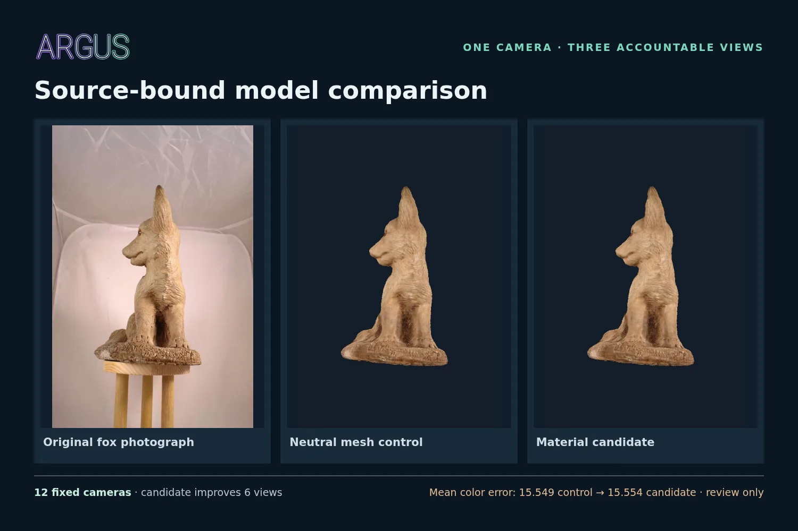
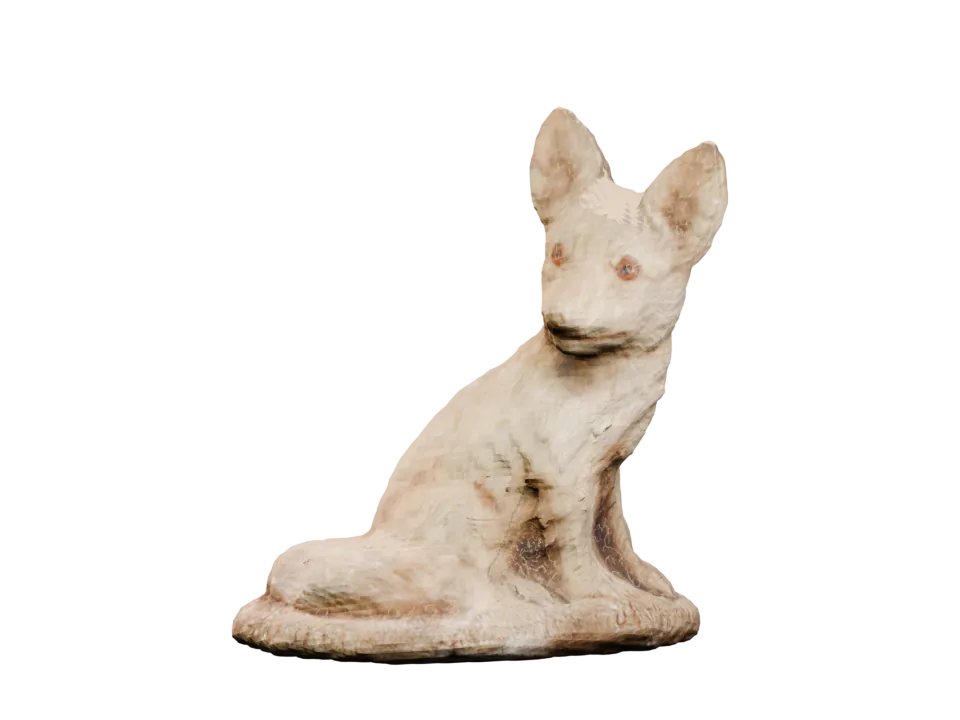
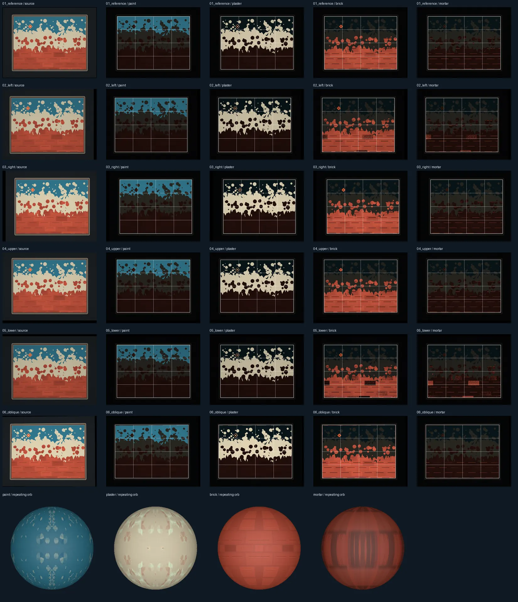

ARGUS / DOCUMENTED DEMONSTRATION / 22 OCT 2026
From photographs to inspectable 3D.
Follow one fox capture from source images through a textured model, camera-matched renders, material analysis, and a real Nebius GPU audit. Every result has a visible qualification state and source trail.

01 / Source-bound camera comparison01 / THE ASSET
A model you can turn, and question.
The reviewed fox GLB carries source-derived base color and a normal map that survived a Blender tangent roundtrip. The mesh is a review candidate. A separate negative-space crop trial has not been joined to this textured asset.

Rendered model orbit · interactive GLB loads when included in the demo package.
01B / MATERIAL LAYERS
One mesh. Three visible states.
Rotate the same source GLB as neutral shape, base color without its normal input, and base color with its normal map. Switch the display light to see what the layered material contributes.

The showroom uses presentation lighting. It does not represent reconstructed capture lighting or material acceptance.
02 / THE CAMERA LAB
Same camera. Visible differences.
Select any source view. Slide across the original and the masked material render, then inspect the neutral control and Nebius residual map. The overlay is for visual inspection; the numbers come from the saved reports.
Camera 01

 SOURCEMATERIAL RENDER
SOURCEMATERIAL RENDERThe display composite uses this photograph's own mask. It does not enter either metric calculation.


Where the pixels disagree

Red: candidate increased error. Blue: candidate decreased error. Black: outside the owner-mask interior.
Read the metric contract and its limits
The local report compares full-resolution 531 × 800 saved camera renders inside the owner-and-mesh region. The Nebius audit resampled the photo/render pairs to 360 × 542 JPEG and eroded each source owner's mask by three pixels, without the exact mesh-hit intersection. Those contracts differ; a small change of sign is a diagnostic sensitivity, not a material acceptance result. The original source masks remain bound to their own photos.
03 / MATERIAL EXTRACTION
One surface, four material regions.
A separate six-view synthetic wall fixture demonstrates exact source-UV partitioning for paint, plaster, brick, and mortar, plus repeatable material orb previews. It validates the workflow layout; physical PBR and scene light recovery still need real captures.

Open detailed material sheet ↗04 / PROVIDER RECEIPTS
The Nebius run, as it happened.
The cloud job processed real source-bound image data on an H100 and wrote inspectable artifacts. Nemotron 3 Super reviewed saved numeric evidence separately. Neither step overrides the deterministic acceptance gates.
12-view CUDA pixel audit
aijob-e00he632g06bw1kxtvSource photographs, their own masks, and both saved camera renders were packaged by view. The outputs were downloaded and SHA-256 checked.
Read the cloud evidence report →Nemotron 3 Super
One bounded diagnostic review of deterministic facts. It selected improve material validation and left asset approval with the saved gates.
779 input · 911 output
What this experiment cost on paper
The provider's billed amounts are still pending in Billing. These are list-price calculations, not invoice totals.
05 / QUALIFICATION
Useful now. Honest about the edges.
The fox is inspectable today. Camera, material, lighting, and control gates remain visible so an attractive render cannot silently become a certified asset.
06 / DOCUMENTATION
Follow the evidence.
These reports are included with the local demonstration package. They record the source lineage, GPU execution, per-view measurements, limits, and cost method.
WHAT COMES NEXT
Make the whole route repeatable.
We plan to improve quick cropping, symmetry controls, and object detection, then move and optimize the complete photo-to-model and material workflow end to end. Users with local GPUs can run it themselves; paid subscriptions could fund Nebius GPU processing for users who need cloud compute.
Back to top ↑